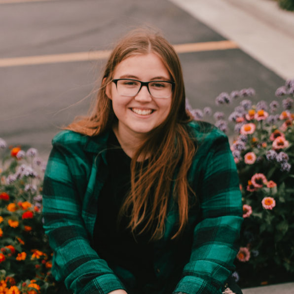

I am a graduate researcher in physics at the University of Southern California, advised by Dr. Kris Pardo, working at the intersection of precision astrometry, gravitational-wave cosmology, and large-scale statistical modeling.
My research focuses on developing the angular power spectrum formalism for detecting a stochastic gravitational-wave background through stellar astrometry. I also characterize what information real surveys like the Nancy Grace Roman Space Telescope can realistically extract given survey geometry and noise. This work has required rebuilding simulation code to run efficiently at scale on HPC clusters.
Before USC, I completed my B.S. in Astrophysics and Physics at the University of Minnesota, where I managed two NSF- and AFRL-funded CubeSat missions, built real-time detection pipelines for the TURBO Observatory, and completed my senior thesis on optimizing electromagnetic follow-up strategies for gravitational-wave events using the UltraViolet EXplorer (UVEX).
Outside formal research, I focus on the quantitative and computational side of physics. This includes predictive modeling, optimization, and building systems that handle data at scale.